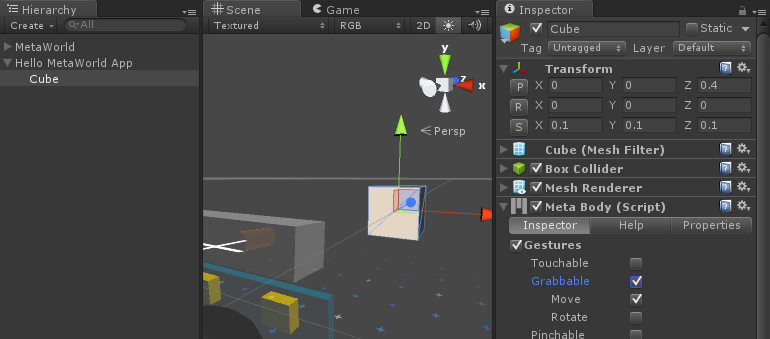

Making a MetaBody
Overview
This guide will show you how to use the MetaBody script to allow the objects in your scene to be manipulated by gestures (eg. grab, pinch, poke).
By the end of this guide, you will be able to:
- Add the
MetaBody scripts to objects
- Enable gesture interactions on the
MetaBody script
- Make objects fade in with a Jaysify effect
Requirements
This tutorial also assumes that you have already completed the following:
Steps
Setting up
- Plug in and set up your Meta glasses
- Run Unity
- Open the 'Meta' project
- Open your 'Hello MetaWorld' scene
- Delete the 'MetaCube' from your 'Hello MetaWorld App' GameObject
- Expand the 'Hello MetaWorld App' GameObject in the Hierarchy window by clicking the triangle next to the name
- Right-click and delete the 'MetaCube' GameObject
Adding the MetaBody script to a GameObject
- Create a new cube as a child of 'Hello MetaWorld App' at position (0, 0, 0.4) with scale (0.1, 0.1, 0.1)
- GameObject > 3D Object > Cube
- Drag the 'Cube' that appears in the Hierarchy window onto 'Hello MetaWorld App'
- Select the 'Cube' in the Hierarchy window
- Modify the values in the Inspector window so that the position is (0, 0, 0.4) and the scale is (0.1, 0.1, 0.1)
- Add the
MetaBody script to the 'Cube'
- Select the 'Cube' in the Hierarchy window
- Click Add Component at the bottom of the Inspector window
- Type in
MetaBody and select it from the search results
- Check the 'Gestures', 'Grabbable' and 'Move' checkboxes in the Inspector window

MetaBody script on Cube
- Save the scene
- Put on your Meta glasses
- Click the Play button to run the scene
- Turn your head to look for the 'Cube' (or push F4 to recentre the Game View)
- Grab the 'Cube' and move it around with your hand
- Stop the scene by clicking the Play button again
Adding the Jaysify effect
- Select the 'Cube' in the Hierarchy window
- Check the 'Jaysify' checkbox in the
MetaBody script in the Inspector window
- Save the scene and click the Play button to run the scene
- Watch as the cube fades in with the Jaysify effect
- Grab the 'Cube' again and move it around with your hand
- Stop the scene by clicking the Play button again
Removing the Jaysify effect
- Uncheck the 'Jaysify' checkbox in the
MetaBody script in the Inspector window
- Save the scene
Conclusion
Now you know how to make any object support gesture interactions! Adding the MetaBody script to a game object makes it Meta-aware, with gestural, positional and visual feedback integration with hand input. The 'Jaysify' option will make your object fade in with a sci-fi line build-in effect.
For further reference on the components of MetaBody, refer to the MetaBody Component Guide.
The next tutorial will teach you how to add marker tracking functionality to your object with MetaBody.
Next tutorial: Tracking a MarkerTarget

 1.8.8
1.8.8